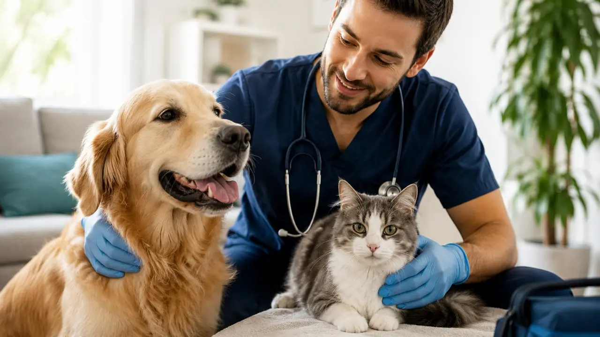
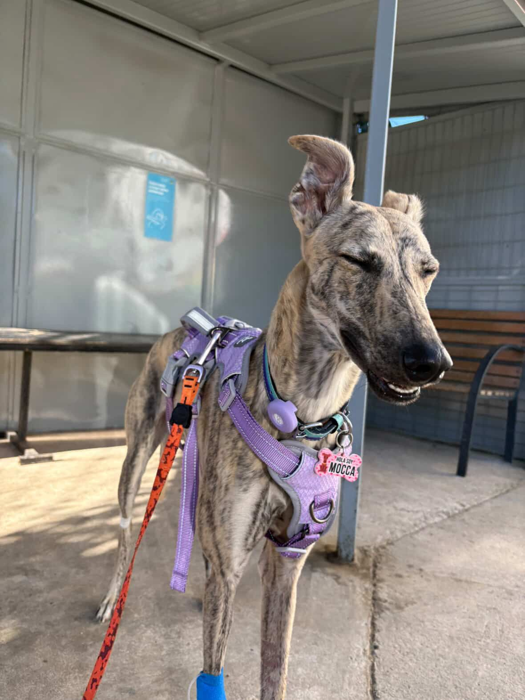
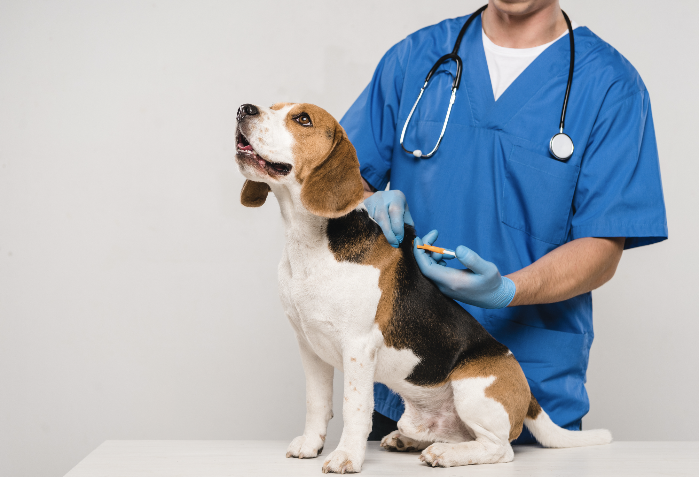

Acerca de Nosotros
Conoce más sobre Veterinaria San Marcos y nuestro compromiso con el bienestar de tus mascotas.
¿Quiénes somos?
Veterinaria San Marcos nace en 2026 con una idea tan sencilla como profunda: cuidar el bienestar de los animales que, con el tiempo, han dejado de ser solo mascotas para convertirse en parte esencial de nuestras familias. Desde el inicio, este proyecto se construye sobre un respeto genuino por la vida animal y sobre la convicción de que la medicina veterinaria no puede limitarse a diagnosticar y tratar enfermedades; debe también reconocer y acompañar el vínculo afectivo que une a cada paciente con quienes lo cuidan.
Ubicada en el corazón de Viña del Mar, en Av. Libertad 1112, la clínica abre sus puertas con el propósito de ser un espacio donde la excelencia médica y la sensibilidad humana converjan de manera natural. Entendemos que una atención veterinaria de calidad exige más que conocimientos técnicos: requiere paciencia, empatía, comunicación clara y un trato digno hacia cada animal y su tutor.
Nuestra labor se sustenta en una concepción integral del cuidado. Procuramos que cada consulta, procedimiento o instancia de atención se desarrolle en un ambiente seguro, respetuoso y lo menos estresante posible. Aspiramos a que la experiencia clínica no se asocie al miedo o la incertidumbre, sino a la confianza de saberse en un lugar donde la salud y el bienestar del animal son el centro de toda decisión.
Nuestra misión
Brindar atención veterinaria de calidad, preocupándonos por la salud y el bienestar de cada mascota que llega a nosotros.
Nuestros valores
Compromiso
Nos comprometemos con el cuidado y la salud de cada mascota.

Bienestar animal
El bienestar de los animales es nuestra principal prioridad.

Cercanía
Buscamos entregar una atención amable y cercana a cada familia.
Nuestros servicios
Ofrecemos distintos servicios para cuidar la salud y bienestar de tu mascota.

Consulta veterinaria
Evaluamos la salud de tu mascota y entregamos la atención necesaria para su bienestar.

Vacunación
Protegemos a tu mascota mediante vacunas y controles preventivos.
Control preventivo
Realizamos controles periódicos para ayudar a mantener a tu mascota saludable.